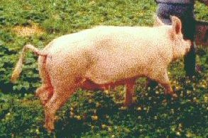

Thursday, February the 17th, 2005
back to: title, date or indexes
Here is what to do. Get a pig's head and place it on top of a stone. This will protect you from thunder and lightning. When you've done that, go to your nearest pig pen. Leaning on the fence, sing songs in celebration of the fertility of pigs. If you do not know any such songs, make one up. After lunch, bury the rest of the pig whose head is atop the stone, except for its feet. You will probably have eaten the head and the feet for lunch, with or without a garnish. Make sure you refrain from needlework all day, and don't drink when you are at home. Keep an eye on the weather. If it is foggy, start gathering sandbags, for soon there will be floods. At all times bear in mind that you are in Ancient Latvia and that today is Tanis Diena, the sacred pig holiday.

Hooting Yard recommends the wikipedia.
Hooting Yard on the Air, February the 23rd, 2005 : “Total Eclipse” (starts around 25:19)